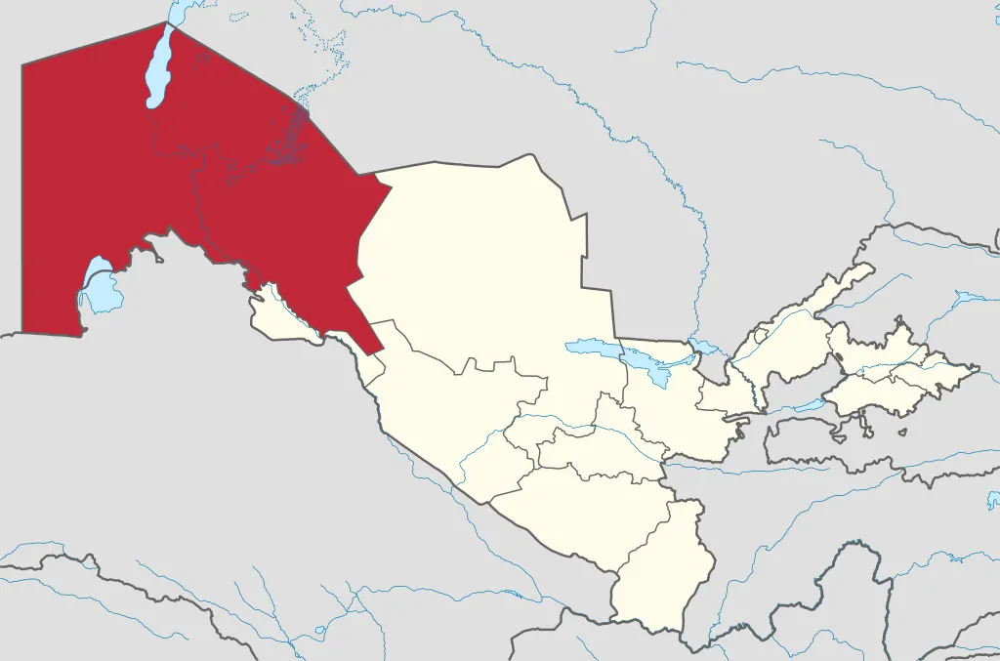

Qoraqalpogʻiston
Qoraqalpogʻiston — Oʻzbekiston Respublikasi tarkibidagi Suveren demokratik Respublika. 1924-yil 14-oktabrda bolsheviklar tomonidan Turkiston ASSR tarkibida Muxtor viloyat sifatida tashkil etilgan. Maydoni 166,6 ming km². Aholisi 2 mlnga yaqin (2021). Respublika poytaxti – Nukus shahri. Tarkibida 16 tuman, 12 shahar, 14 shaharcha va 124 fuqarolar yigʻini bor.
Qoraqalpogʻiston – parlament boshqaruv shakliga ega boʻlgan O'zbekiston respublikasi tarkibidagi hudud. Qonun chiqaruvchi oliy davlat vakolatli organi – koʻp partiyaviylik asosida 5 yil muddatga saylangan deputatlardan iborat Qoraqalpogʻiston hududi Joʻqorgʻi Kengeshi (QR JK). Qoraqalpogʻiston hududi Joʻqorgʻi Kengeshi raisi respublika rahbari hisoblanib, u Joʻqorgʻi Kengesh deputatlari orasidan 5 yil muddatga saylanadi (faqat ketma-ket 2 muddatdan oshmaydi). Davlat hokimiyatining oliy ijro etuvchi-boshqaruvchi organi Qoraqalpogʻiston Respublikasi Vazirlar Kengashi, yaʼni Qoraqalpogʻiston Respublikasi hukumati hisoblanadi. Qoraqalpogʻistonda Oʻzbekiston Respublikasi Konstitutsiyasi bilan bir vaqtda Qoraqalpogʻiston Oliy kengashining 1993-yil 9-apreldagi 12-chaqiriq 12-sessiyasida qabul qilingan Qoraqalpogʻiston Hududi Konstitutsiyasiga amal qilinadi. Qoraqalpogʻiston oʻz davlat ramzlari: gerb, madhiya va bayrogʻiga ega.
Aholisi, asosan, qoraqalpoqlar, shuningdek oʻzbeklar, qozoqlar, turkmanlar, rus, tatar, koreyslar va boshqa o'tizga yaqin millatlar yashaydi. Aholining oʻrtacha zichligi 1 km²ga 9,4 kishi. Shahar aholisi 48,5%, qishloq aholisi 51,5%. Davlat tillari – qoraqalpoq va oʻzbek tillari. Etnik tarkibi – 34,1 % Qoraqalpoqlar, 30,8 % Oʻzbeklar, 28,6 % Qozoqlar, 6,2 % boshqa millatlar. Dindorlari – musulmon sunniylar. Yirik shaharlari: Nukus (siyosiy ahamiyati boʻyicha Toshkentdan keyin 2-oʻrinda), Toʻrtkoʻl, Taxiatosh, Xoʻjayli, Qoʻngʻirot, Chimboy.